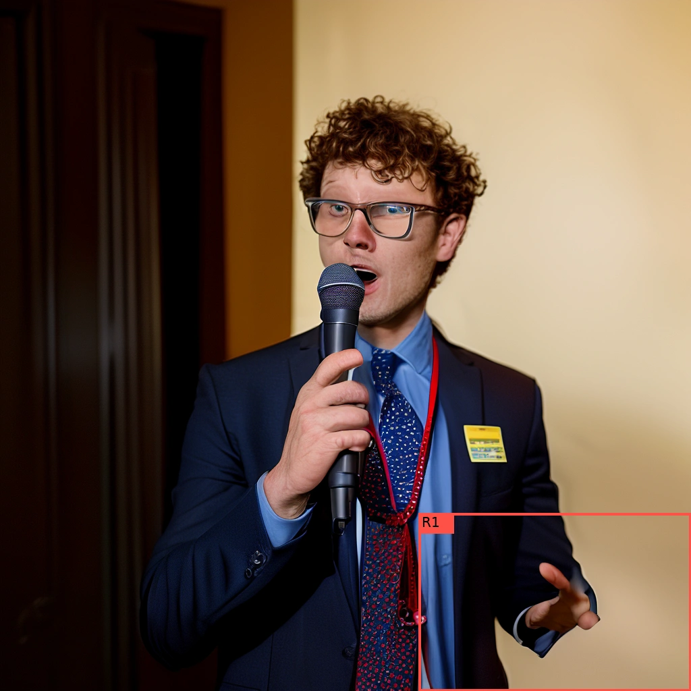
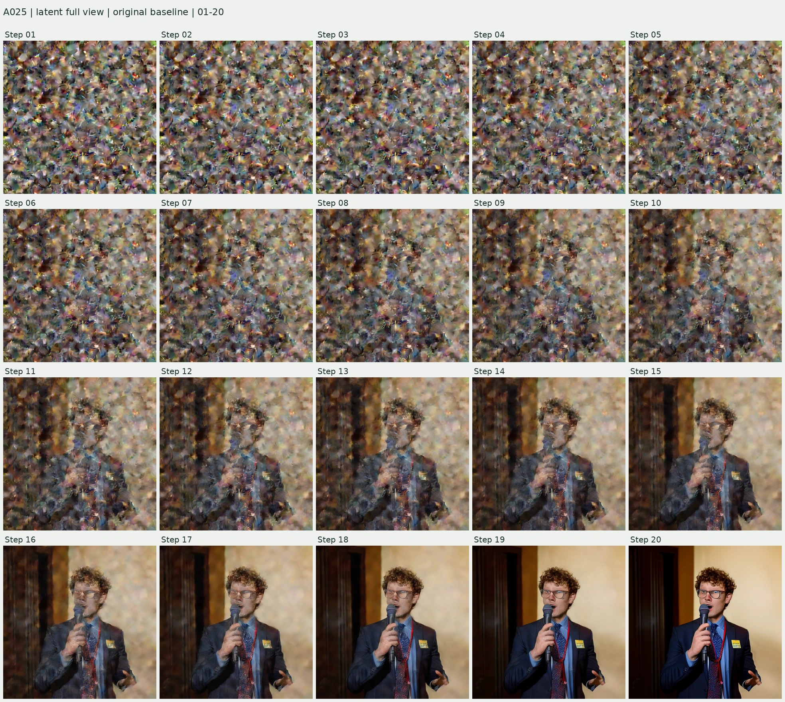
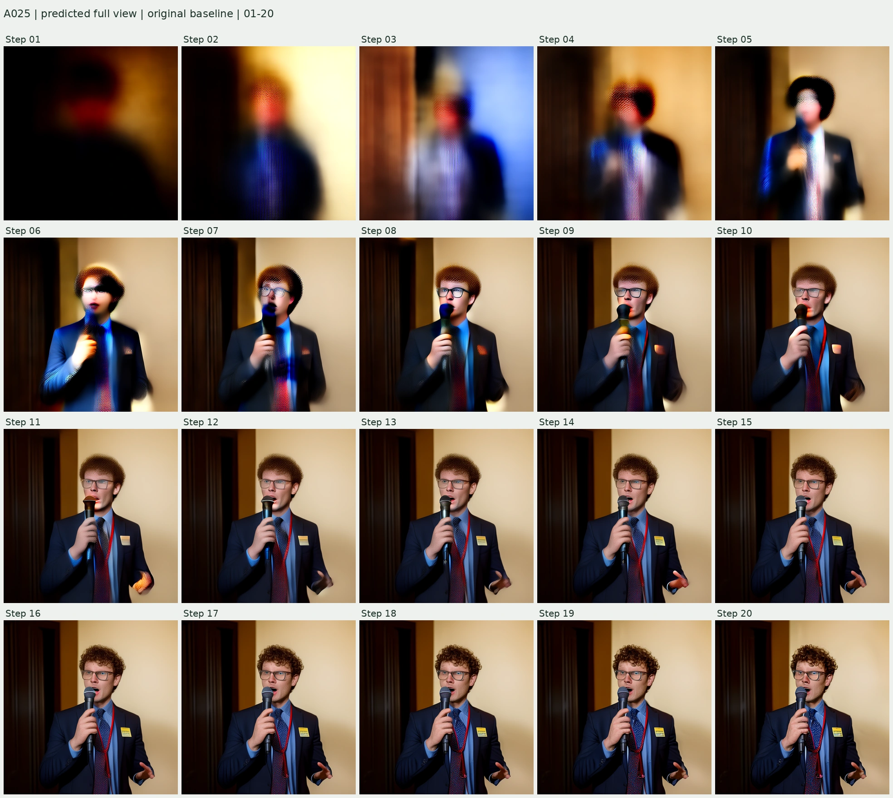
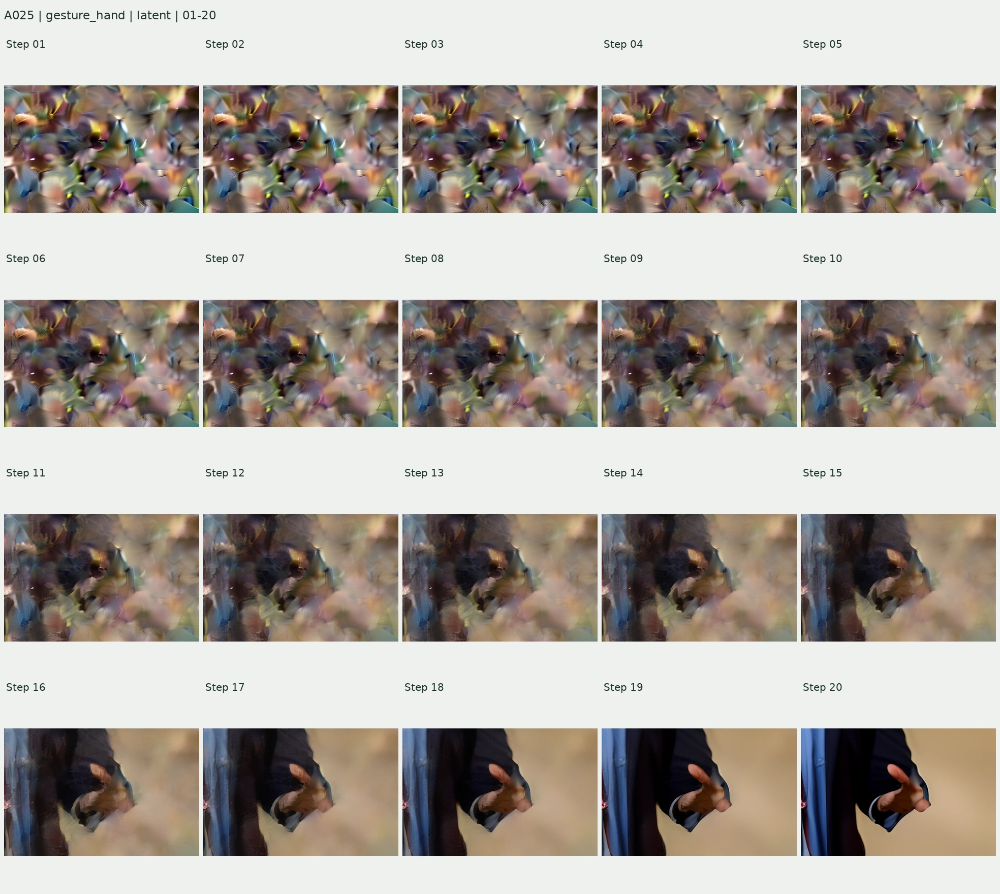
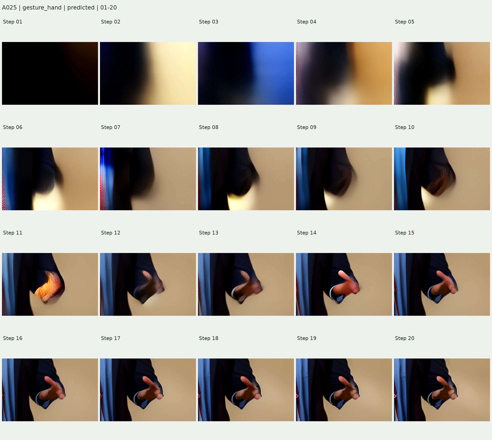

A025 · 原始生成的完整 20 步
P03 · flickr-ffhq-35614 · Seed 65537 · Sana-0.6B · 1024 px · CFG 4.5
本页只导出已有原始轨迹，没有重新采样或修复。各区域使用固定像素坐标框，红框为已有视觉记录中的问题区域，黄框为尚不确定的对照区域。
查看原始 Prompt
A vertical photograph of a man with short curly brown hair and rectangular metal glasses, speaking into a handheld microphone with a blue band. He wears a dark suit, pale blue shirt, patterned navy tie and a red conference lanyard with a badge. One hand holds the microphone while the other is raised in a small gesture. He looks slightly right, mouth open, against a softly lit cream wall and dark doorway.最终原图与裁剪位置

R1 · 画面右下手 问题区域（既有视觉复核）
画面右下手掌的指根/短突起糊连
固定框：[620, 760, 1024, 1024]
全图：两种 20 步联图
Latent 直接解码：第 s 次更新完成后的 xₜ 状态（xt_s），仍可能含有噪声。
预测干净图：第 s 次模型计算给出的 x̂₀（x0_s），是当时对干净图像的估计，没有为它额外执行剩余步骤。它来自该次更新前的状态 xt_(s−1)。

下载这张 20 联图 · 5 列 × 4 行，按行从左到右为 Step 01–20。点击图片可查看大图。


下载这张 20 联图 · 5 列 × 4 行，按行从左到右为 Step 01–20。点击图片可查看大图。

R1 · 画面右下手 · 细节 20 联
画面右下手掌的指根/短突起糊连

下载这张 20 联图 · 5 列 × 4 行，按行从左到右为 Step 01–20。点击图片可查看大图。


下载这张 20 联图 · 5 列 × 4 行，按行从左到右为 Step 01–20。点击图片可查看大图。

单步查看：全图与所有局部同步切换
下方使用无损 WebP。全图为 1024 × 1024；细节保持原裁剪像素，不做锐化或补细节。点击图片打开原尺寸文件。


R1 · 画面右下手


如何解读
早期 Latent 的直接解码不是已生成好的照片；噪声、颜色异常或纹理不能直接判作最终结构错误。预测干净图也会继续改变，不能把它当作最后必然出现的结果。
两列使用同一套原生 VAE 缩放和后处理，没有按单张图调整对比度。20 联图的格子为 384 px 缩略图；单步文件保持原像素。固定裁剪框来自最终图，只适合观察该空间位置的变化，早期人体部件移动时可能落到框外，因此须结合全图。
本轮轨迹中 xt_20 与 x0_20 相同。两类第 20 步解码均已逐像素核对原始最终图；每例第 1、10、20 步预测图也重新解码核对了既有 PNG。